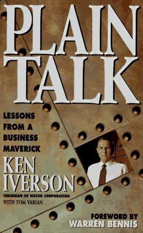

肯·艾弗森（Ken Iverson）1925年生于伊利诺伊州，机械工程学位出身，在多家钢铁企业辗转后，于1965年临危受命出任纽柯公司（Nucor Corporation）总裁。彼时的纽柯几近破产，前身不过是一家经营不善的核仪器与钢结构小公司。艾弗森上任后做出一个大胆决定：砍掉几乎所有非核心业务，把全部赌注押在用电弧炉（Electric Arc Furnace）熔炼废钢的"小型钢厂"（mini-mill）上。1969年，纽柯第一座电弧炉工厂在南卡罗来纳州达灵顿投产。当时主流观点认为，电弧炉只能生产低端钢材，不可能与大型综合钢厂竞争。艾弗森用此后三十年的业绩证明了怀疑者的错误：纽柯从一个年营收不足千万美元的小企业，成长为全美最大的钢铁生产商，年增长率保持在17%左右，连续三十余年每个季度盈利，从未亏损。
但这本书的核心并非讲述钢铁技术，而是讲管理哲学。艾弗森的管理理念可以用一个词概括——"反常识"。当美国大企业普遍追求多层级、多委员会、厚厚的员工手册时，纽柯走向了完全相反的方向。全公司只有四个管理层级：董事长/总裁、总经理、部门经理、一线主管。一家年营收近40亿美元的财富500强公司，总部只有22名员工，租用夏洛特一间朴素的办公室，没有公司专机，没有高管专属餐厅，甚至连公司车和固定车位都没有。艾弗森自己是美国薪酬最低的大公司CEO之一，他认为管理层与员工之间不应存在任何待遇特权的鸿沟。
纽柯的薪酬制度是全书最引人注目的部分。一线工人的底薪并不高，但根据产量每周结算的绩效奖金可以让总收入达到行业最高水平——工人们的收入远超同行。与此同时，管理层的浮动薪酬比例更大，公司效益不好时管理层减薪的幅度也更大。艾弗森将此称为"共担痛苦"（painsharing）：经济下行时，普通员工减薪约25%，管理层减薪40%至60%，但纽柯从未裁过一名员工，也从未因订单不足而关闭任何一座工厂。在一个以周期性裁员闻名的行业里，这是绝无仅有的记录。
艾弗森将纽柯的成功归因于文化而非技术，他的判断是"七分文化，三分技术"。他相信，当员工确信自己的努力能直接转化为收入、确信经济困难时不会被抛弃、确信自己会被公平对待时，他们会释放出远超管理层想象的生产力和创造力。管理层的职责不是制定事无巨细的规章制度，而是建立信任，然后让一线员工自行决定如何把事情做到最好。纽柯鄙视委员会、岗位说明书和绩效考核等一切带有官僚色彩的制度。艾弗森反复强调，层级是效率的敌人，让管理者和工人之间产生距离感的一切东西都应当被消灭。
吉姆·柯林斯（Jim Collins）在《从优秀到卓越》（Good to Great）中将纽柯作为核心案例之一加以研究，认为它是"第五级领导力"和"以人为先"理念的典范。领导力大师沃伦·本尼斯（Warren Bennis）为本书撰写了前言。沃尔玛时任总裁兼CEO大卫·格拉斯（David Glass）评价道："肯·艾弗森告诉我们，美国可以在严酷的全球竞争中胜出。他在一个只有特立独行才能存活的行业里做到了这一点。他对纽柯故事的记述，应当成为我们所有人的蓝图。"德鲁克基金会时任总裁弗朗西丝·赫塞尔拜因（Frances Hesselbein）则写道："肯·艾弗森是一位用愿景塑造了一个行业和未来的领导者，他的品格、价值观和伦理与一家成功创新企业的使命和价值融为一体。"知名价值投资者莫尼什·帕伯莱（Mohnish Pabrai）也曾在哈佛大学的讲座中向学生推荐此书，称其"易读而内容丰富，关于极简管理和商业原则有很多值得学习的东西"。
这本书没有任何管理学理论模型，没有流程图和矩阵表。正如不伦瑞克公司（Brunswick Corporation）时任董事长彼得·拉森（Peter Larson）的评价："没有理论，只有重要的、切实可行的想法——在纽柯的熔炉里经受过检验的想法。"它之所以在出版近三十年后仍被商界和投资界反复传阅，原因在于艾弗森用毕生实践证明了一件看似简单却极难做到的事：真正信任你的员工，消除一切不必要的层级与特权，让每个人的付出与回报直接挂钩——组织就能释放出惊人的力量。对于关注企业文化、组织管理和长期竞争力的中国读者来说，这本薄薄的小书所提供的，不是可以照搬的模板，而是一种值得深思的管理信念。